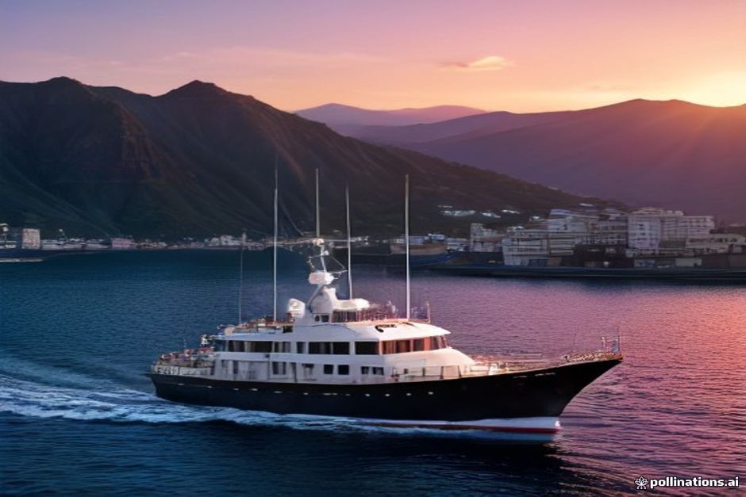
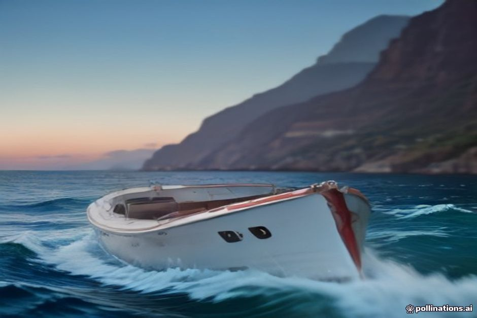

Chifbay ne propose que deux affrètements privés au départ de Marina do Funchal — le Day Trip et le Sunset Trip — et la plupart des nouveaux clients ne savent pas trop lequel correspond à leurs projets. Voici une comparaison directe, étape par étape.
Quelle est la vraie différence entre le Day Trip et le Sunset Trip ?
Le Day Trip se baigne, le Sunset Trip non. Les deux sont des affrètements privés pour 5 personnes maximum le long du même tronçon de la côte sud — Câmara de Lobos, Cabo Girão et Ribeira Brava — mais le Day Trip navigue en plein jour (10h00–13h00 ou 14h00–17h00) avec des arrêts pour se mettre à l'eau, tandis que le Sunset Trip part à 18h00 pour la lumière plutôt que pour la baignade.

Peut-on se baigner sur les deux excursions ?
Non, seulement sur le Day Trip. Il s'arrête à Fajã dos Padres pour se baigner, sauter à l'eau et barboter, puis de nouveau à Ribeira Brava pour une seconde baignade, avant le retour rapide vers Funchal. Le Sunset Trip longe la même côte mais saute entièrement les arrêts baignade, car l'eau refroidit vite une fois le soleil sur le déclin, et entrer et sortir de l'eau après 18h00 n'a rien de rafraîchissant, plutôt de l'inconfort.
Quelle excursion choisir pour voir Cabo Girão ?
N'importe laquelle — Cabo Girão est sur l'itinéraire des deux. Le Day Trip le longe tôt dans le parcours, avec des images drone au-dessus de la falaise avant de continuer vers les arrêts baignade. Le Sunset Trip fait demi-tour à Cabo Girão sur son option la plus courte de 2 heures, donc si vous voulez voir le soleil se coucher juste derrière la plus haute falaise maritime d'Europe, le départ au coucher du soleil vous offre cette lumière précise sans avoir besoin du parcours plus long.
Le Day Trip de 3 heures vaut-il le temps supplémentaire par rapport à l'option de 2h30 ?
Cela dépend si vous voulez Ponta do Sol et une vidéo filmée. Le Day Trip de 2h30 (€500) couvre Câmara de Lobos, Cabo Girão, la baignade à Fajã dos Padres et la baignade à Ribeira Brava — largement suffisant pour la plupart des groupes. Le Day Trip de 3 heures (€600) continue au-delà de Ribeira Brava jusqu'à Ponta do Sol et s'accompagne d'une vidéo filmée de toute l'excursion, ce qui est le meilleur choix si vous voulez couvrir plus de distance et repartir avec des images à garder plutôt que seulement les photos du drone.
Faut-il choisir le Sunset Trip de 2 heures ou de 2h30 ?
Choisissez selon la distance que vous voulez parcourir le long de la côte. Le Sunset Trip de 2 heures (€400) fait demi-tour à Cabo Girão, tandis que l'option de 2h30 (€500) continue jusqu'à Ribeira Brava avant de rentrer — 30 minutes de plus sur l'eau pour davantage de littoral et une tranche plus tardive de l'heure dorée. Aucune des deux n'inclut la baignade ; les deux incluent images drone, boissons et nourriture.
Quelle excursion est la meilleure pour les photos et les images drone ?
Les deux excursions incluent des images drone au-dessus de Cabo Girão, mais la lumière diffère. Le Day Trip offre des images nettes et contrastées des falaises et des criques turquoise — idéal pour des photos qui montrent clairement la baignade et l'eau. Le Sunset Trip échange cette netteté contre une lumière chaude, dorée et orangée sur le basalte à mesure que le soleil descend, ce qui est l'option la plus spectaculaire si l'objectif est l'ambiance plutôt que le documentaire.
Quelle excursion convient le mieux aux familles avec de jeunes enfants ?
Le Day Trip, presque toujours. Les enfants profitent des arrêts baignade à Fajã dos Padres et Ribeira Brava pour se dépenser dans l'eau, et l'horaire plus tôt dans la journée (le créneau de 10h00 ou celui de 14h00) évite d'empiéter tard sur l'heure du coucher. Le Sunset Trip convient mieux aux couples ou aux groupes qui préfèrent se détendre avec un verre plutôt que de nager.
Quand réserver chaque excursion ?
Réservez le Day Trip si la baignade, le saut à l'eau à Fajã dos Padres ou l'arrivée jusqu'à Ponta do Sol comptent pour vous — choisissez le créneau du matin pour une eau plus calme, ou celui de l'après-midi si vous préférez faire la grasse matinée. Réservez le Sunset Trip si la priorité est la lumière de l'heure dorée sur les falaises, avec des boissons à bord et aucune urgence à rentrer avant la nuit. Dans tous les cas, comme chaque excursion Chifbay est un affrètement privé rien que pour votre groupe, il n'y a pas de mauvais choix — seulement celui qui correspond à ce que vous attendez réellement de votre après-midi ou de votre soirée.

Même côte, même bateau, deux après-midis très différents.
Si l'hésitation persiste, la règle la plus simple reste valable : pour la baignade, réservez le Day Trip ; pour la lumière, réservez le Sunset Trip.